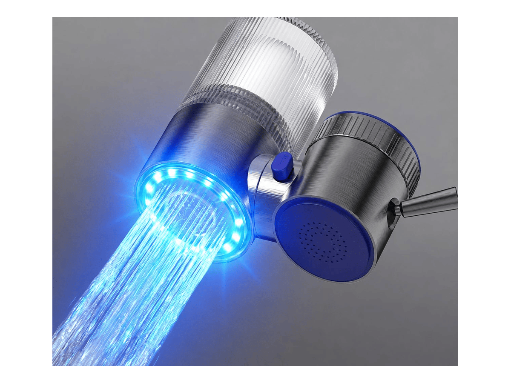

Grifo
GrifoRP-F01
Filtro de grifo clásico
SKU: RP-F01
MOQ: confirmar al consultar
Inicio/Productos/Filtros de grifo/ RP-F02

Filtros de grifo
Filtro de grifo giratorio 360° (SG-LT-18) — siete variantes. RP-F02 lidera la familia.
RP-F02, RP-F03, RP-F04 y RP-F05 son las cuatro primeras variantes del mismo filtro de grifo, que comparten la misma carcasa de ABS y forma. Difieren en ángulo de rotación, LED de turbina, núcleo de válvula y accionamiento: RP-F02 — rotación 360°, cerámica + GAC / CTO / UF + GAC; RP-F03 — añade un anillo de luz azul con LED de turbina accionado por agua, cerámica + GAC / CTO; RP-F04 — rotación 270°, núcleo de válvula cerámica, LED de turbina (SG-LT-27); RP-F05 — núcleo de válvula cerámica, accionamiento por botón PUSH. Se unen a la familia tres variantes más: un purificador de grifo de cápsula blanca (filtración en 5 etapas, 1 unidad + 4 cartuchos, 145,7 × 66 × 67 mm), una variante dorada de carcasa estilizada con luz azul y una variante de acero inoxidable con ventana transparente (2,5 L/min, volumen nominal de agua purificada de 2000 L, 144 × 114 × 59 mm). Las especificaciones se confirman por modelo y pedido.
Las opciones de ajuste y acabado se confirman por pedido.
Solicitar presupuesto para RP-F02
El voltaje / la frecuencia se configuran según el país de destino. Otras configuraciones se confirman por pedido.
RP-F02 es una familia de filtros de grifo que se monta en el grifo de la cocina y filtra el agua en el punto de uso. Siete variantes comparten la misma idea y difieren en rotación, cartucho, válvula y accionamiento, para que una marca pueda ofrecer una pequeña gama de una familia. La variante estándar ofrece cartuchos de cerámica + GAC, CTO y UF + GAC, y la familia también incluye una variante de cápsula de 5 etapas y una variante de acero inoxidable con ventana transparente. Está hecha para propietarios de marca que quieren una gama de filtros de grifo fácil de colocar en una línea de cocina.
¿Cuál es la cantidad mínima de pedido?
El primer pedido es de 200 unidades por modelo, y los pedidos repetidos son de 500 unidades.
¿Puedo pedir una muestra antes de un pedido en volumen?
Sí. Las muestras están listas en 15 días y la tarifa de la muestra se reembolsa en su primer pedido en volumen. Los pedidos en volumen tardan 40 días tras la aprobación de la muestra y se envían FOB Shenzhen.
¿Qué variante debo pedir?
Cotizar como RP-F02 e indicar la variante: estándar 360°, LED de turbina, válvula cerámica 270°, botón PUSH, cápsula blanca, dorado estilizado o ventana de acero inoxidable.
Siete variantes — cotizar como RP-F02 e indicar la variante (estándar 360°, LED de turbina, válvula cerámica 270°, botón PUSH, cápsula blanca, dorado estilizado o ventana de acero inoxidable).
Pase el cursor sobre la imagen de una variante para ver sus especificaciones. En pantallas táctiles, toque una imagen.



Una séptima variante — carcasa estilizada, acabado dorado con luz azul — aparece en la tabla comparativa siguiente. Aún no hay una foto limpia del producto, así que no se muestra ninguna imagen aquí.
Especificaciones completas de cada variante, lado a lado. La tabla de especificaciones más abajo muestra los valores de RP-F02.
| Especificación | RP-F02-1 — estándar 360° (SG-LT-18) | RP-F02-2 — LED de turbina (SG-LT-18F) | RP-F02-3 — válvula cerámica 270° (SG-LT-27) | RP-F02-4 — botón PUSH (SG-LT-18A) | RP-F02-5 — variante de cápsula blanca (MJLTJSQDB01) | RP-F02-6 — dorado estilizado (SG-LT-18F) | RP-F02-7 — variante de acero inoxidable con ventana (SG-LT-17B) |
|---|---|---|---|---|---|---|---|
| Carcasa | ABS | ABS | ABS | ABS | A confirmar por pedido | ABS | Acero inoxidable |
| Opciones de cartucho | Cerámica + GAC / CTO / UF + GAC | Cerámica + GAC / CTO | Cerámica + GAC / CTO | Cerámica + GAC / CTO / UF + GAC | Filtración en 5 etapas, 1 unidad + 4 filtros; índice de yodo del carbón activado ≥1000 mg/g | Cerámica + GAC / CTO / UF + GAC | Cerámica + GAC / CTO / UF + GAC; filtración en siete capas |
| Ajuste | Rotación de 360° | Rotación de 360° | Rotación de 270° | A confirmar por pedido | A confirmar por pedido | Rotación de 360° | A confirmar por pedido |
| Opción LED | — | LED de turbina accionado por agua | LED de turbina accionado por agua | — | — | Luz azul (según el catálogo) | — |
| Núcleo de la válvula | A confirmar por pedido | A confirmar por pedido | Cerámica | Cerámica | A confirmar por pedido | A confirmar por pedido | A confirmar por pedido |
| Conmutación | Palanca | Palanca | Palanca | Botón PUSH | A confirmar por pedido | A confirmar por pedido | Palanca (modos agua bruta / purificada) |
| Fuente de agua | Agua corriente municipal | Agua corriente municipal | Agua corriente municipal | Agua corriente municipal | Agua corriente municipal | Agua corriente municipal | Agua corriente municipal |
| Caudal de agua pura | A confirmar por pedido | A confirmar por pedido | A confirmar por pedido | A confirmar por pedido | A confirmar por pedido | A confirmar por pedido | 2.5 L/min |
| Volumen nominal de agua purificada | A confirmar por pedido | A confirmar por pedido | A confirmar por pedido | A confirmar por pedido | A confirmar por pedido | A confirmar por pedido | 2000 L |
| Dimensiones | A confirmar por pedido | A confirmar por pedido | A confirmar por pedido | A confirmar por pedido | 145.7 × 66 × 67 mm | A confirmar por pedido | 144 × 114 × 59 mm |
| Presión de trabajo | A confirmar por pedido | A confirmar por pedido | A confirmar por pedido | A confirmar por pedido | 0.1–0.4 MPa | A confirmar por pedido | 0.1–0.4 MPa |
| Temperatura del agua | A confirmar por pedido | A confirmar por pedido | A confirmar por pedido | A confirmar por pedido | 5–38°C | A confirmar por pedido | 5–38°C |
8 filas de especificaciones del catálogo de ROPureOEM.
| Carcasa | ABS |
|---|---|
| Opciones de cartucho | Cerámica + GAC / CTO / UF + GAC |
| Ajuste | Rotación de 360° |
| Fuente de agua | Agua corriente municipal |
| Caudal nominal / capacidad | A confirmar por pedido |
| Precisión de filtración | A confirmar por pedido |
| Presión / temperatura | A confirmar por pedido |
| Vida útil del cartucho / dimensiones | A confirmar por pedido |
Las especificaciones proceden del catálogo de ROPureOEM. Cuando un valor aún no está confirmado, se indica como «Confirmado por pedido» — no publicamos cifras sin confirmar.
GrifoFiltro de grifo clásico
SKU: RP-F01
MOQ: confirmar al consultar
 Grifo
GrifoFiltro de grifo de fibra de carbono
SKU: RP-F06
MOQ: confirmar al consultar
 Grifo
GrifoFiltro de grifo con indicador de vida útil del filtro
SKU: RP-F08
MOQ: confirmar al consultar
 Grifo
GrifoFiltro de agua para grifo, integrado
SKU: RP-F10
MOQ: confirmar al consultar